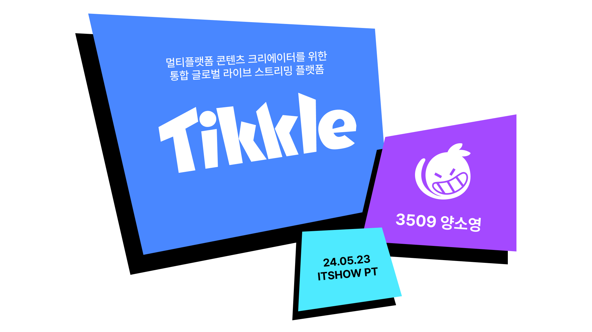
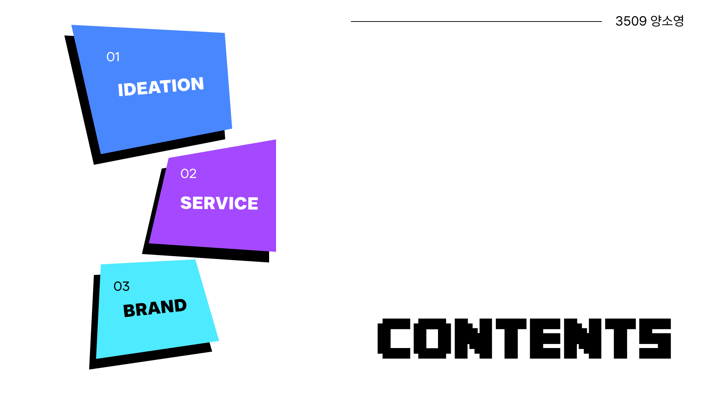
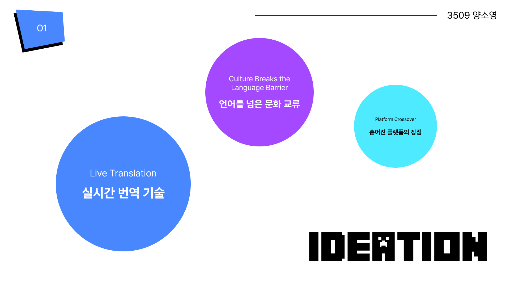
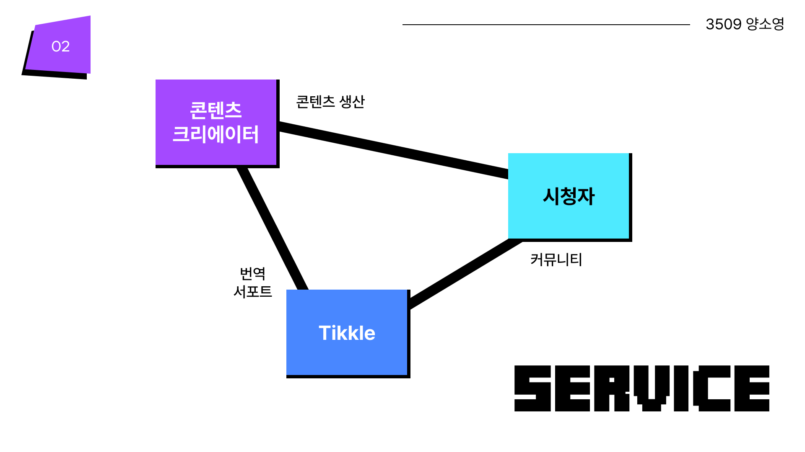
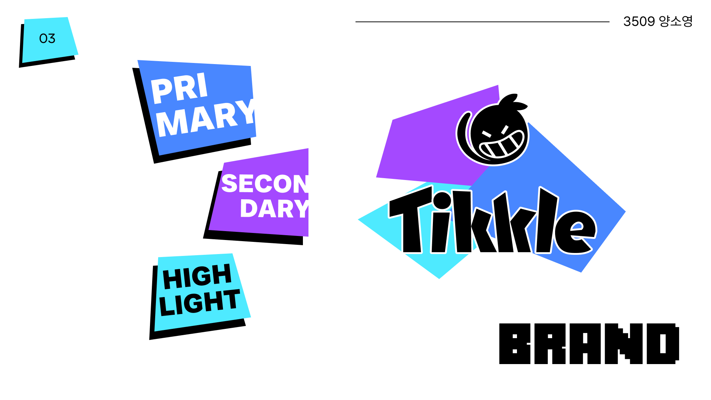

Tikkle
#DEV
#HTML&CSS
#DESIGN
개요

2024 ITSHOW 전시 작품으로, "글로벌 콘텐츠 크리에이터를 위한 라이브 스트리밍 플랫폼"을 기획 및 디자인하고 웹퍼블리싱까지 진행하였다.
기간:
2024. 03. ~ 2024. 06.
사용:
Adobe Photoshop, Adobe Illustrator, Figma, Visual Studio Code
기획
프레젠테이션
  "유튜브든 인스타그램이든, 오로지 “한 가지 언어”로만 콘텐츠가 추천되는 분은 없죠?"
"뛰어난 기계 번역과 열린 마음의 소비자로 이루어진 글로벌 콘텐츠 시장, 이제는 공급자 측에서부터 다양한 언어권을 노려야 합니다.
지난 23년 3월, 전 세계의 크리에이터가 함께 모일 수 있는 콘텐츠 창작의 장을 열고, 세계의 커뮤니티를 하나로 연합한다는 목적 아래 마인크래프트 서버 QSMP가 오픈했습니다.
QSMP는 실시간 번역 기술로 언어 장벽을 타파하고, 영어권과 스페인어권을 시작으로 브라질리언과 프랑스어 크리에이터를 초대해 콘텐츠 창작과 문화 이벤트를 통해 네 언어의 커뮤니티를 뭉치게 했습니다. 2024년에는 한국인 크리에이터들과 독일어 크리에이터까지 합류했습니다.
언어 장벽 없이 전 세계의 사람들과 소통하며 문화를 나누는 시대는 더 이상 상상 속의 먼 미래가 아닙니다."
"덕질은 최고의 언어 학습법이라는 모 SNS 유저의 명언이 있죠."
"QSMP를 만든 영미권 및 스페인어권 콘텐츠 크리에이터 Quackity는 완전한 2개국어 사용자로, 영어 및 스페인어로 실시간 방송을 진행합니다. 서로 다른 두 팬덤이, 내 최애의 모든 콘텐츠를 이해하고 싶다는 마음으로 한 마음 한 뜻이 되어 언어를 공부하고 있습니다.
두 네이티브 뿐만 아니라 영어를 이해하는 비영어권 팬들이 제 2외국어로 스페인어를 배우는 사례도 Quackity 팬덤 커뮤니티에서는 심심찮게 볼 수 있습니다. 가령, 한 한국인 고등학생이 3년만에 영어를 유창하게 구사하고 스페인어까지도 할 수 있게 된다던지요.
QSMP가 열리면서, 단 한 마디도 알아들을 수 없는 다른 먼 나라의 낮선 크리에이터에 푹 빠져 1년만에 자막 없는 생방송을 함께 즐길 수 있게 된 팬들이 수두룩해졌습니다. 한 번쯤 생판 모르는 언어에 미쳐보고 싶다는 생각, 해 본 적 있지 않으신가요?"
"Tikkle은 앞으로 다가올 거대한 문화 교류의 장에 다리가 되고자 합니다."
"Tikkle은 간지럽히는 행위의 의태어로, 장난스러운 간지러움처럼 행복한 웃음을 주는 라이브 스트리밍 플랫폼을 추구합니다.
QSMP 프로젝트에서 영감을 받아 만들어진 Tikkle은 스트리머의 송출 프로그램과의 연동을 통해 오디오와 화자를 인식하고, 시청자가 선택한 언어로 번역되도록 하여 실시간 자막을 보여줍니다.
또 기존 라이브 스트리밍 플랫폼에서 도입한 적 없는 자체 커뮤니티를 제공하여 팬이 직접 번역에 참여한 1차 및 2차 창작 콘텐츠에 더 쉽게 접근할 수 있도록 합니다.
언어장벽은 창의력 넘치는 콘텐츠 크리에이터들 앞에서는 더 이상 사람을 갈라놓을 수 없습니다. 사람을 이해하면 언어를, 언어를 이해하면 문화를, 문화를 이해하면 다시 사람을 이해할 수 있습니다.
오해에서 비롯한 혐오는 문화와 이해로 바로잡을 수 있다 믿습니다."
 